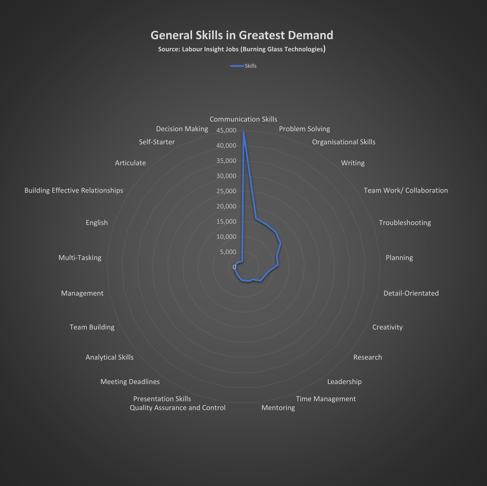

Industry Data

According to the ideal job selections from our group members, several key skills including both in-field and generic are identified to match the curriculum requirements. The collective skills can be generalised into two major sections: IT related specific skills and General skills.
Above figure shows our group skill sets (in red laced bars) overlap 23% areas of IT skills in greatest demand from 1 Mar 2017 to 28 Feb 2018 in Australia OR New Zealand AND (BGTOCC Family: Information Technology). SQL is the most sought-after skill that appears in majority of ICT job advertisements. Proficiency in JavaScript combined with other programming languages like JAVA, Python, HTML, PHP, .NET Programming etc dominates the IT skill demand list. Notably, there are an array of skills including SQL server, XML, HTML, .NET, JavaScript, CSS that all contribute the cloud and web development. Which may indicate a major cloud-oriented job trend emerging in the ICT industry.

Our general skill sets basically are in line with the trajectory of top demand of general skills in IT industry. Communication is undoubtably the most needed competency in all aspects of daily work from understanding instructions, customer specifics, organisational disciplines to performing collaborative team tasks, expressing opinions and ideas. Problem solving is the second most favourable skill as IT jobs encompass a high level of digital literacy and specialised qualifications. Australian Jobs 2021 (National Skills Commission, p26) report showed 78% IT professionals hold at least a bachelor’s degree or higher qualifications.
Below is an interview with an IT industry proffesional named Abdul Hawari.
 https://teams.microsoft.com/_#/mp4/viewer/teams/https:~2F~2Frmiteduau.sharepoint.com~2Fsites~2FA2groupIITRMIT~2FShared%20Documents~2FGeneral~2FRecordings~2FIT%20professional%20Interview%20(For%20a%20Uni%20research%20assignment%20purpose)-20211012_183441-Meeting%20Recording.mp4?threadId=19:J82-3RdZx-5JZsJ4Iu0ksnTf1ojhsqghfjmZ2nm4IZ01@thread.tacv2&baseUrl=https:~2F~2Frmiteduau.sharepoint.com~2Fsites~2FA2groupIITRMIT&fileId=e0fd3132-86ca-4101-9235-38881fc3771e&ctx=files&rootContext=items_view&viewerAction=view
https://teams.microsoft.com/_#/mp4/viewer/teams/https:~2F~2Frmiteduau.sharepoint.com~2Fsites~2FA2groupIITRMIT~2FShared%20Documents~2FGeneral~2FRecordings~2FIT%20professional%20Interview%20(For%20a%20Uni%20research%20assignment%20purpose)-20211012_183441-Meeting%20Recording.mp4?threadId=19:J82-3RdZx-5JZsJ4Iu0ksnTf1ojhsqghfjmZ2nm4IZ01@thread.tacv2&baseUrl=https:~2F~2Frmiteduau.sharepoint.com~2Fsites~2FA2groupIITRMIT&fileId=e0fd3132-86ca-4101-9235-38881fc3771e&ctx=files&rootContext=items_view&viewerAction=view